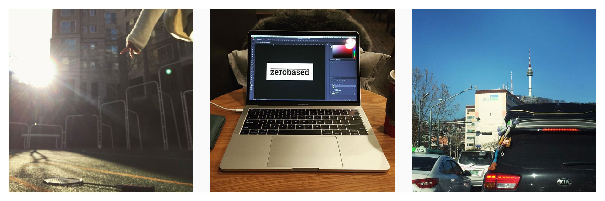

2017년은 이전 회사 퇴사와 관련된 회고를 적었었다. 그 후로 1년 동안은 아무것도 하지 않고 지내기로 마음먹었었는데, 정말 아무것도 하지 않은 기분이 들어 정리해보기로 했다.
1월
 사람을 많이 만났다. 다른 회사에 취직할 생각이 없고 당분간은 창업할 생각도 없다고 선언했지만, 그래도 연락해주신 분들과 만나 밥을 먹고 차를 마셨다. 주로 개발 조직을 꾸리는 고민을 가진 분들과 많이 만났는데, 내 질문은 주로 “왜 개발팀이 필요하다고 생각하세요?” 였다. 별 도움이 되지 않았을 것 같다. 지인 소개로 이재웅 님을 만날 기회를 가져 커뮤니티와 미디어에 대해 질문을 했다. 소개해준 분에게 감사하고 시간을 내고 (내 생각에는) 솔직하게 답을 준 재웅님께도 감사했다.
이사를 준비했다. 전세 대출 계약 연장이 안 되어 사채부터 보험 담보 대출까지 온갖 대출을 동시에 받았다. 도와준 분들에게 감사했다. 그리고 이자는 비싸고 쓰리다는 것을 다시 한번 느꼈다. 은행 직원에게 만료 3개월 전부터 연장 여부를 확인했었는데, 된다고 하는 말을 믿은 내가 잘못이었다. 막상 한 달을 남기고는 안된다고 연락이 왔다. 더블 체크로도 모자란 세상이다.
새로 무언갈 한다면 어떤 이름으로 해야 하나 고민을 했다. 뭘 해야 할 지 뿌옇게 안 보이는 상황에서 어떻게 할지만 생각했다. 그래서 zerobased라는 이름을 짓고 도메인을 사서 일단 로고만 만들었다. 하지만 아무것도 하지 않으니 아무 일도 일어나지 않았다.
2월
2월까지는 그래도 다른 사람들에게서 연락이 왔다. 집을 빼야 하는 날짜와 이사 들어갈 집의 날짜가 한 달 차이가 나서 바깥 생활을 시작했다. 아이가 아직 이전 학교에 다니고 있는데 호텔과 에어비앤비 생활을 하려니 쉽지가 않았다. 매일 아침 눈을 뜰 때마다 영화에서처럼 여기가 어딜까 하는 기분이 들었다. 여행 가방이 모자라 집에서 쓰던 플라스틱 서랍장에 옷을 때려 넣고 차에 싣고 다녔다. 혼자 어디 갈 일이 있어 차를 끌고 나갈 때면 류이치 사카모토의 Andata를 크게 반복해서 들었다. 이전까지는 Merry Christmas Mr.Lawrence가 최고라고 생각했는데, 이 시기를 지내며 Andata가 더 깊게 다가왔다. 조금 힘들었다.
아침에는 아이를 등교시키고, 점심에는 집 인테리어를 살펴보고, 오후에는 사람을 만나고, 저녁에는 아주 조금 코딩하는 생활을 반복했다. 무언가 붕 뜬 기분이 들어 어떤 일도 손에 잡히질 않았다. 사람이 어딘가 정착해서 사는 데에는 다 이유가 있지 싶다.
백수인데도 불러주는 분이 있어, 산속 깊은 곳에 찾아가서 발표하고 돌아왔다. 처음에는 고사하고 싶었지만, 이렇게 살다가는 정말 어떻게 되겠다 싶어 오는 연락을 거절하지 않고, 누군가 해달라는 일이 있으면 그래도 긍정적으로 생각해보자고 마음먹었다. 그렇게 찾아가는 길에 엄청난 안개를 만났는데 너무 진해서 차 앞 5미터도 보이질 않았다. 어쩐지 인생 같구나, 는 생각을 했다.
3월
드디어 바깥 생활을 끝내고, 공사가 끝나지 않은 집에 들어갔다. 그것만으로도 무척 감사했다.
집은 따뜻했다.
같은 시기에 회사를 나왔던 분들은 다들 이직을 하거나 회사를 차려 다시 자리를 잡고 있었지만 나는 여전히 부유하고 있었다. 누가 그렇게 하라고 한 것은 아니지만 그냥 그랬다. 이제는 더 이상 다른 사람에게서 연락이 오지 않았다. 1월에 하려고 했던 일들은 하나도 하질 않았고 그렇게 시간은 흘러갔다. 그나마 딸이 새 학교에 잘 적응하는 것이 고마웠다.
명함을 만들었다. 하지만 딱히 쓸 곳이 있지는 않았다.
4월
길고양이를 입양했다. 아주 오래전에 살던, 철거가 예정된 둔촌주공아파트에서 구조된 고양이였다. 이름을 짓고 정을 붙이려고 했는데 밖에서 나고 자란지 오래되어 그런가, 야생성이 강해 사람에게 곁을 내주지 않는다. 어쩔 수 없으니 그냥 그렇게 같은 공간에서 적당히 살기로 했다.
부모님과 같이 살던 어린 시절에 멍멍이를 키우던 이후로 처음으로 반려동물과 함께 하는데, 이 친구는 달라도 너무 달라 낯설었다. 집에서 목욕을 시키려다가 물려서 피가 났다. 포기하고 병원으로 데려가 주사도 맞히고 목욕도 시켰다. 밉다는 생각보다는 앞으로 어떻게 같이 지내야 하나 걱정이 들었다.
5월
이전 회사의 주식을 정리하면서 많은 것을 배웠다. 사람들은 매우 솔직하면서도 솔직하지 못하다.
대출을 하나 빼고 모두 정리했다. 이사하는 동안 음악을 함께 듣고, 이케아를 오고 가던 까만 차를 팔았다.
5월은 조금 슬펐다.
6월
아이가 초등학교에 다니는 동안 해외로 여행을 자주 다니자는 얘기를 아내와 했었다. 한국에서 계속 공부하고 대학교를 진학할 예정이라면 앞으로 시간이 별로 없을 거라는 얘기였다. 인정하고 싶지 않지만 인정하지 않을 수 없는 얘기다. 일단 일본 후쿠오카를 다녀왔다. 5월이 지나고 빚에 대한 부담이 줄어들어, 가만히 있을 때도 별생각 없이 차분히 있을 수 있게 된 것을 느꼈다. 이렇게까지 크게 영향을 받고 있었나 매우 놀랐다. 사람들이 정신력이라고 말하는 것의 대부분은 개인의 노력으로 어떻게 되는 게 아니라, 주변 환경에 영향받는 부분이 더 큰 것이 아닐까 하는 생각을 했다.
내키지 않은 일도 연락을 받았을 때 긍정적으로 생각해보자는 결심을 한 탓에, 한 해커톤에 심사위원으로 다녀왔다. 메일에 다른 사람 이름이 적혀 있어 차선책으로 연락이 왔다는 것을 인지했지만, 그냥 궁금하기도 해서 한다고 했다. 크게 방해되는 역할이 아니었기를 바랄 뿐이다.
아버지가 뇌종양으로 병원에 입원하셨다. 수술이 잘 되어 다행이었다. 병원에 보호자로 있는 동안 하루에 한 캔씩 데자와를 마시는 게 낙이었다. 이 일을 계기로 인생에서 운이 차지하는 것이 더 크다는 것을 다시 한번 인지했다. 백수라서 환자를 보호하고 병원의 여러 일을 처리할 수 있었다. 이것도 운이라면 운일까.
7월
영국에 다녀왔다. 차를 빌려 2,400km를 운전해서 스코틀랜드까지 한 바퀴를 하고 돌아왔다. 서울에서 타던 차와 같은 차를 빌려 운전했음에도 우핸들은 적응이 쉽지 않았다. 사전 조사를 거의 하지 않고 숙소만 잡아 계속 돌아다녔다. 특별히 하는 일도 없는 사람인데 마음만 바빴는지 준비를 거의 못 했다. 아내 얘기로는 영국은 있을 때보다 다녀오고 나서 더 생각이 많아 난다고 하던데, 나도 그런 것 같다. 어떤 곳이, 어떤 일이 특별히 좋았다는 기억이 선명하지는 않은데, 다시 가보고 싶다.
마지막 숙소에서 처음으로 영어로 화를 내봤다. 초과 예약 때문인지 지하에 방을 내준 것도 참기 힘들었는데, 그 방이 마침 식당 바로 아래 방이었다. 식당에서는 파티가 열렸는지, 밤 10시에도 천장에서 들리는 시끄러운 음악과 발소리에 참을 수가 없었다. 여행지에서는 좋게좋게 생각해보려고 했지만, 한계를 넘었던 것 같다. 이것도 다 경험이겠지.
8월
아무것도 하지 않은 채 반년도 넘게 지나가 버렸다. 정말 뭐라도 하지 않으면 안되는 기분이 들었다. 사실 아무것도 하지 않아도, 뭘 한다고 해도 크게 달라질 만한 일은 없었을 텐데, 처음 돈을 벌었던 2000년 이래로 거의 쉬지 않고 계속해서 어딘가 소속되어 일하다 갑자기 아무것도 하지 않는 상황이 되니 적응을 못 했다. 괜히 불안하다. 멀쩡한 집을 놔두고 밖으로 나돌기 시작했다. 유행하는 협업 공간도 방문해보고 여러 카페도 전전하다 용산 근처의 커피숍에 자리를 잡았다. 오전에 근처에서 밥을 먹고 자리를 잡고 앉아 코딩을 하던 뭘 하던 저녁까지 있는 생활을 반복한다. 일단 그동안 조금씩 기여하던 오픈소스 프로젝트를 열심히 해보기로 했다.
만들고 싶은 것은 조금씩 명확해지는데 시작을 할 수 없었다. 아마 하고 싶은 것을 구체화했을 때 실패하고 비웃음당하는 것이 두려워서 아닐까. 사실 아무도 그렇게 나와 내 일에 관심을 가지고 있지 않다. 내가 뭘 하더래도 아무도 알지 못한다, 그걸 알지만 잘 안된다, 잘 안된다, 하고 싶다, 하고 싶지 않다. 할 수 있는 일은 하고 싶지 않고, 하고 싶은 일은 하지 못한다. 스스로 들어간 우물에서 나오지 못한다.
생일날이었다. 새벽에 일어나 한강까지 걸어갔다. Andata를 반복해서 듣고 강을 바라보며 죽음에 대해 생각했다. 그렇게 멍청하게 서 있다 나를 지나쳐 걸어가는 많은 노인을 바라보았다. 통행에 방해되는 내가 귀찮다는 느낌이었다. 본래 인간이란 우주의 먼지 같은 존재지만 유난히 한없이 작게 느껴진다.
9월
간만에 온 연락들을 모두 수락하고 사람들을 만났다. 여전히 같은 이야기를 한다. 말을 계속하면서도 기준만 엄격하고 아무것도 하지 않는 골방 선비 같다는 생각을 한다. 사람들을 만날 때마다 죄책감이 든다. 그래도 만나지 않으면 외롭다. 내가 가고 있는 길이 어딘지도 모르겠고, 어차피 아무 곳으로도 가고 있지 않으니 길이라고 말하는 것조차 부끄럽다.
파이콘 일본에 다녀왔다. 파이썬 소프트웨어 재단 부스에 앉아 스티커를 나눠주고 회원 가입과 후원을 부탁했다. 같이 숙소를 쓰던 사람과 취해서 들어와 밤늦게까지 코딩을 했다. 침대에 쭈그리고 앉아 커밋을 했다. 새로 고침을 눌렀다. 내 것이 아니라고 생각하니 덜 부담되어 그랬을까, 오랜만에 눈에 보이는 결과물을 만들었다. 왜 내 일은 시작조차 하지 못하는가 자괴감이 들었다. 코딩을 못하는 것도 아니고 하는 것도 아니다. 그래도 여전히 제품 프로그래밍을 할 수 있다는 것을 느꼈다.
여기가 바닥이었으면 좋겠다.
10월
스페인에 다녀왔다. 영국에서 준비가 부족했던 것을 반성하고 이번에는 가이드 투어도 잡고 숙소뿐만 아니라 이동 수단과 관광지를 정리해서 다녀왔다. 한결 나았다. 기차를 타고 이동할 때 식당칸에서 커피를 시켰다. 아내가 흐린 커피를 마시고 싶다고 해서, 흐린 커피를 구글 번역기로 번역했더니 Café nublado라고 나와, 이걸 직원에게 보여줬더니 옆 사람까지 불러 웃고 난리다. Nublado는 창밖 날씨처럼 흐린, cloudy를 뜻한다고 알려준다. /usr/local/bean에 이어 두 번째 커피 가게 이름을 얻었다. 언젠가 기회가 되면 써먹고 싶다.
스페인 남부를 빌린 차로 이동하는데 가족들이 모두 잠들어서, 아이폰에 들어있는, 그동안 자주 듣지 않았던 iTunes에 들어있는 음악을 셔플 재생하고 있을 때였다. 노땐스를 갑자기 들으니 기분이 묘하다. 처음 이 노래를 듣던 시절에는 인생이 이렇게 흘러갈 줄 알았을까. 고등학교 시절 아르바이트로 돈을 모아 샀던 소니 CD 플레이어로 처음 들었던 때가 생각났다. 등굣길에 가방에 넣고 자전거를 타고 가다 턱에 걸리기라도 하면 튐 방지가 없어 툭 끊기던 CD 플레이어. 다 지나간 일이고, 신해철도 죽어 이 세상에 없고 그의 음악만 남았다.
시간은 흘러간다. 세금 냈다.
11월
사람들을 만나 얘기할 때 내가 말하는 시간보다 다른 사람의 얘기를 듣는 시간을 늘리려고 의식적으로 노력했다. 한 번도 인연이 없어 함께한 적 없던 GDG DevFest Seoul에 자원봉사자로 참여했다. 지난 일 년간 모두 수동적으로, 누군가 만나자고 하면 만나고, 하자고 하면 겨우 하던 것에서 벗어나 처음으로 누군가가 올린 스태프 찾는 글에 먼저 참여하겠다고 연락했다. 의식적으로 일을 피하는 것에서 벗어나 평소에 하지 않던 일을 해야겠다는 생각에서 였을 것이다. 늘 참석하던 모임과는 분위기가 사뭇 달랐지만 그래서 좋았다.
테슬라 모델X를 시승했다. 역시나 좋은 차였지만 나는 역시 낡은 인간이고, 예전 것을 좋아하는 사람이라는 것을 확인했다. 매끈하고 부드러운 주행은 내가 차에 바라는 것과는 너무 달랐다. 이동 수단으로 생각한다면 좋은 선택이겠지만, 나는 이 글조차 Vim으로 편집하고 있다. 더 나은 것보다는 내가 선호하는 것을 찾아가는 과정이 좋다. 아직은 기계적인 불편함이 존재하는 차를 사고 싶다.
12월
사람들을 만나 무얼 하고 싶은지 얘기를 할 때마다 아이디어가 조금씩 달라지고 구체화되어 간다. 일을 설명하면서 즐겁다. 이 일을 얼마나 오랫동안 생각해왔나 떠올려본다. 일단은 그것으로 만족한다.
파이썬 스프린트를 했다. 영근 님과 3명이라도 오면 좋고, 아무도 오지 않아 단둘이 해도 어쩔 수 없지 않나 얘기했는데, 정말로 딱 세 분이 아침부터 오셔서 같이 이슈를 찾고 패치를 만들었다. 지난 3개월간 최근의 자바스크립트 변경점을 공부하고 오픈소스를 꾸준히 했다. 아직 프로그래머로 활동할 수 있다는 자신감이 조금 생겼다. 프로그래밍을 아직 할 수 있고, 미약하게나마 남들에게 도움이 될 수 있어 다행이다.
하지만 이제는 정말 해야 할 것 같다.